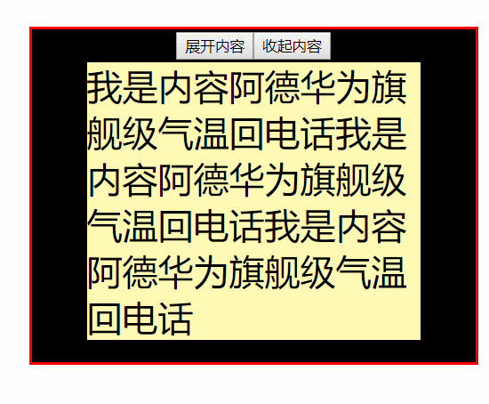
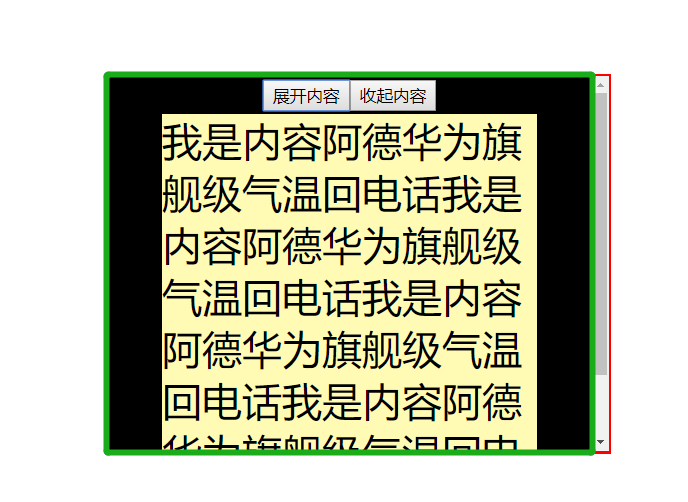
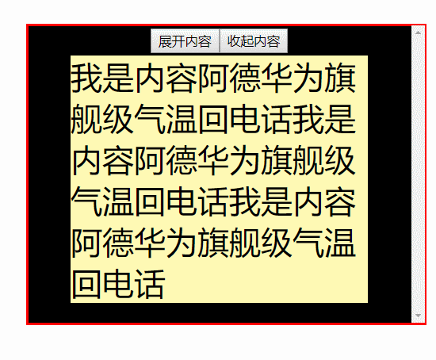
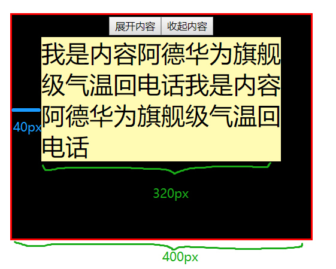
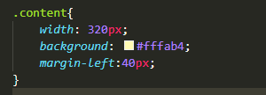
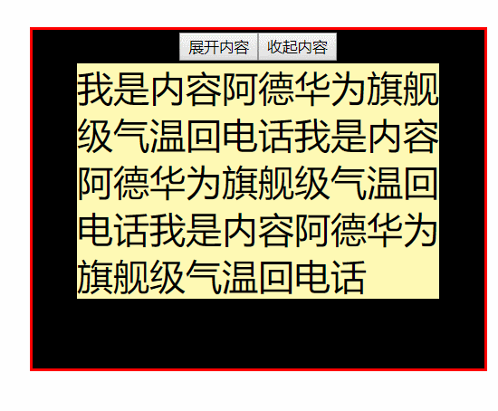

有时候在一个宽高固定的容器中，需要加载“更多内容”，如果设置了overflow:auto，加载更多内容时，子元素的大小超过父容器，就会出现滚动条。而滚动条的突然出现，会让子元素统统“向左抖了一下”。效果如下：

先来复习一下overflow的几个概念：
overflow:visible //默认属性，内容超出显示
overflow:auto //内容不超出时无滚动条，内容超出时才显示滚动条
overflow:hidden //内容超出隐藏
overflow:scroll //不管内容超不超出，滚动条常驻
在这里，我的内容定位方式为：margin: 0 auto，这是因为滚动条出现后挤占了一部分位置，此时内容是在除了滚动条的绿色区域居中的，但相对于红色边框的父容器中，是稍稍偏左的。如下：

特别注意一个问题：假如内容的宽度是用百分比来写的，那么计算时是不包括父容器的滚动条的。举个栗子，父容器在这里宽度为400px,内容宽度假如为80%，在没有滚动条时，内容宽度是320px。有滚动条时，内容则变成了（400px - 滚动条宽度）* 80%，也就是说，内容宽度此时要稍稍小于320px。
解决方案一：滚动条常驻（不完美但也还行）
滚动条常驻，或者滚动条消失，都是为了避免“滚动条从无到有”这个突发过程。当然,一般是不会让滚动条消失的，因为很容易会让用户以为没有“更多内容”或者“内容到此为止了”，这个现象是不太合理的。让滚动条常驻呢？不完美，但也可以接受。
设置父容器overflow-y:scroll，效果如下：

解决方案二：写死容器及子元素的宽高定位（特别注意小屏设备）
既然用百分比来写宽高，用auto来定位都会受到滚动条的影响，那么为了不受其影响，把所有东西都写死不就行了，举个栗子，现在容器400px,内容320px,那么易得左边距为(400px - 320px)/2。

内容部分的css代码如下：

最终效果如下：

可以看到已经是达到要求了，内容本身没有左移。但是注意这里的父容器是写定宽高的，在大屏电脑或者小屏笔记本宽度都是400px，如果父容器宽高又要随着屏幕不同而动态改变，那这个margin-left就没法定位到容器正中间了，除非先写定宽高再做缩放。